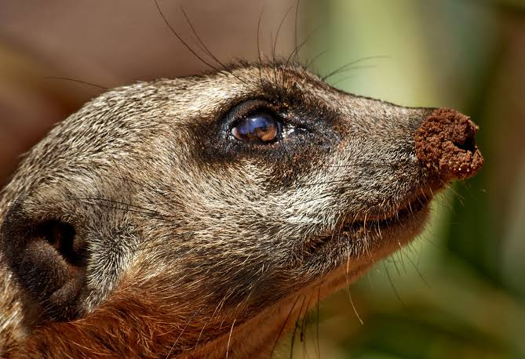
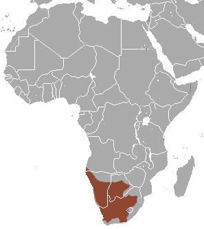
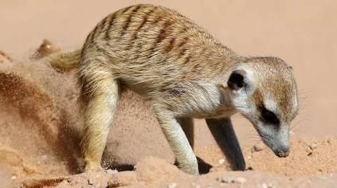
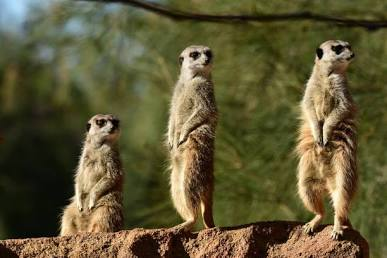
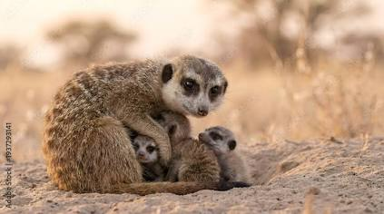
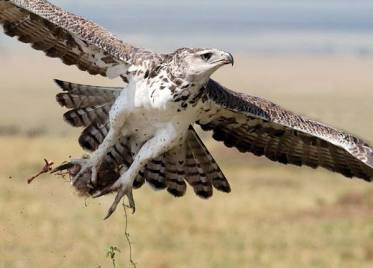

<!DOCTYPE html>
<html lang="en">
<head>
    <meta charset="UTF-8">
    <meta name="viewport" content="width=device-width, initial-scale=1.0">
    <title>Meerkat Dossier</title>
</head>
<body>
    
</body>
</html>

<header>
<h1>Species Page: Meerkat</h1>
</header>

<nav>
    <ul>
<li><a href="african-adventure.html">Home</a></li>
    </ul>
</nav>

<main>
    <article>
        <section id="basic-info">
            <h2>Scientific Information</h2>
            <p><strong>Common Name:</strong> Meerkat (Suricate)</p>
            <p><strong>Status/Conservation:</strong> Least Concern <sup><a href="#ref1">[1]</a></sup></p>
            <section id="classification">
                <h2>Full Scientific Classification</h2>
                <table border="1">
                    <tr><th>Taxonomic Rank</th><th>Classification</th></tr>
                    <tr><td>Kingdom</td><td>Animalia</td></tr>
                    <tr><td>Phylum</td><td>Chordata</td></tr>
                    <tr><td>Subphylum</td><td>Vertebrata</td></tr>
                    <tr><td>Class</td><td>Mammalia</td></tr>
                    <tr><td>Subclass</td><td>Theria</td></tr>
                    <tr><td>Order</td><td>Carnivora</td></tr>
                    <tr><td>Suborder</td><td>Feliformia</td></tr>
                    <tr><td>Family</td><td>Herpestidae</td></tr>
                    <tr><td>Genus</td><td>Suricata</td></tr>
                    <tr><td>Species</td><td>Suricata suricatta</td></tr>
                </table>
            </section>
         <section id="physical-profile">
            <h2>Physical-profile</h2>
            <dl>
               <dt>Size range</dt>
               <dd> Body length measures 9.7 to 14 inches (24 to 35 cm), with a tail length of 7 to 9 inches (17 to 25 cm). </dd>

               <dt>Weight</dt>
               <dd> Weighs 1.4 to 2.1 pounds (620 to 970 grams).</dd>
               <dt>Identification Markings</dt>
               <dd>Identification Markings: Slender bodies with grey, tan, or brown fur featuring faint parallel dark stripes across their backs, and distinct dark patches surrounding their eyes that act like sunglasses against glaring desert sunlight.  
                <sup><a href="#ref2">[2]</a></sup></dd>
           </dl>
           
       </section>
       <section id="habitat-geography">
        <h2>Habitat & Geography</h2>
        <p>Habitats: Arid environments, open plains, dry savannahs, and stony deserts.
            Distribution: Southern Africa, spanning across Botswana, Namibia, Angola, and South Africa.</p>
<h3>Distribution Map</h3>

        </section>
<section id="ecology and behavior">
    <h2>Ecology and Behavior</h2>
<h3>Feeding and Diet</h3>
<p>Omnivorous foragers primarily eating insects, spiders, scorpions, small lizards, birds, eggs, fruit, and roots, using their sharp claws to dig efficiently.</p>
<ul>
    
</section>
<section id="communication and social behavior">
    <h2>Communication and Social Behavior</h2>
    <p>Living in complex family groups called mobs or clans of up to 30 individuals, they utilize specialized sentinels on lookout duty, distinct vocal calls, and grooming to maintain social bonds.</p>
    
</ol>
<h3>Life Cycle and Breeding Behaviors</h3>
                <p>Dominant females breed, producing litters of 2 to 5 pups after an 11-week gestation period, with other mob members helping babysit and forage for the young.</p>
                
            
            
                <section id="Predators">
    <h2>Predators</h2>
    <p>Aerial predators such as martial eagles and hawks, alongside ground predators like jackals and snakes, pose constant threats that require vigilant mob warnings.</p>
    
</section>
    </article>
</main>